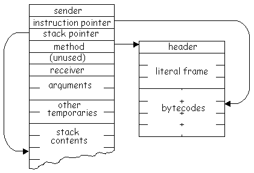

|
| Figure 27.4 |
| 1. | Calls on other routines of the interpreter. Since both the invocation and definition of the routine are in Interpreter, they will appear as messages to self. |
|
|
| 2. | Calls on routines of the object memory. An Interpreter uses the name memory to refer to its object memory, so these calls will appear as messages to memory. |
|
|
| 3. | Arithmetic operations on object pointers and numerical values. Arithmetic operations will be represented by standard Smalltalk arithmetic expressions, so they will appear as messages to the numbers themselves. |
|
|
| 4. | Array accesses. Certain tables maintained by the interpreter are represented in the formal specification by Arrays. Access to these will appear as at: and at:put: messages to the Arrays. |
|
|
| 5. | Conditional control structures. The control structures of the virtual machine will be represented by standard Smalltalk conditional control structures. Conditional selections will appear as messages to Booleans. Conditional repetitions will appear as messages to blocks. |
|
|
| Figure 27.1 |
Method
Headers Since the method header is a SmallInteger,
its value will be encoded in its pointer. The high-order 15 bits of the
pointer are available to encode information; the low-order bit must be
a one to indicate that the pointer is for a SmallInteger. The
header includes four bit fields that encode information about the CompiledMethod.
Figure
27.2 shows the bit fields of a header.
| Figure 27.2 |
| flag value | meaning |
|---|---|
|
|
no primitive and 0 to 4 arguments |
|
|
primitive return of self (0 arguments) |
|
|
primitive return of an instance variable (0 arguments) |
|
|
a header extension contains the number of arguments
and a primitive index
|
Special
Primitive Methods Smalltalk methods that only
return the receiver of the message (self) produce CompiledMethods
that have no literals or bytecodes, only a header with a flag value of
5. In similar fashion, Smalltalk methods that only return the value of
one of the receiver's instance variables produce CompiledMethods
that contain only headers with a flag value of 6. All other methods produce
CompiledMethods
with bytecodes. When the flag value is 6, the index of the instance variable
to return is found in the header in the bit field ordinarily used to indicate
the number of temporary variables used by the CompiledMethod.
Figure
27.3 shows a CompiledMethod for a Smalltalk method that only
returns a receiver instance variable.
| Figure 27.3 |
|
| Figure 27.4 |
|  |
| Figure 27.5 |
| Figure 27.6 |
| activeContext | This is the active context itself. It is either a MethodContext or a BlockContext. |
| homeContext | If the active context is a MethodContext, the home context is the same context. If the active context is a BlockContext, the home context is the contents of the home field of the active context. This will always be a MethodContext. |
| method | This is the CompiledMethod that contains the bytecodes the interpreter is executing. |
| receiver | This is the object that received the message that invoked the home context's method. |
| instructionPointer | This is the byte index of the next bytecode of the method to be executed. |
|
This is the index of the field of the active
context containing the top of the stack.
|
| Figure 27.7 |
| messageSelector | This is the selector of the message being sent. It is always a Symbol. |
| argumentCount | This is the number of arguments in the message currently being sent. It indicates where the message receiver can be found on the stack since it is below the arguments. |
| newMethod | This is the method associated with the messageSelector. |
|
This is the index of a primitive routine associated
with newMethod if one exists.
|
| Figure 27.8 |